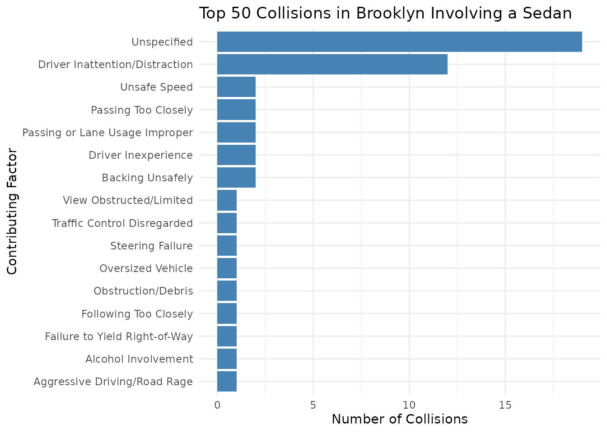

vignettes/getting-started.Rmd
getting-started.Rmd
knitr::opts_chunk$set(warning = FALSE, message = FALSE)
library(nycOpenData)
library(ggplot2)
library(dplyr)
#>
#> Attaching package: 'dplyr'
#> The following objects are masked from 'package:stats':
#>
#> filter, lag
#> The following objects are masked from 'package:base':
#>
#> intersect, setdiff, setequal, unionWelcome to the nycOpenData package, a R package
dedicated to helping R users connect to the NYC Open Data Portal!
The nycOpenData package provides a streamlined interface
for accessing New York City’s vast open data resources. It connects
directly to the NYC Open Data Portal, helping users bridge the gap
between raw city APIs and tidy data analysis. It does this in two
ways:
nyc_pull_dataset() function
The primary way to pull data in this package is the
nyc_pull_dataset() function, which works in tandem with
nyc_list_datasets(). Most workflows do not require users to
manually construct API requests or manage authentication details.
The first step would be to call the nyc_list_datasets()
to see what datasets are in the list and available to use in the
nyc_pull_dataset() function. This provides information
about datasets available through the live NYC Open Data catalog used by
the package.
catalog <- nyc_list_datasets()
catalog |>
filter(grepl("collision", name, ignore.case = TRUE)) |>
select(key, uid, name)
#> # A tibble: 4 × 3
#> key uid name
#> <chr> <chr> <chr>
#> 1 collisions_involving_vehicles_managed_by_department_of_health_and… knr6… Coll…
#> 2 motor_vehicle_collisions_vehicles bm4k… Moto…
#> 3 motor_vehicle_collisions_crashes h9gi… Moto…
#> 4 motor_vehicle_collisions_person f55k… Moto…The output includes columns such as the dataset title, description,
and link to the source. The most important pieces are the key
and uid. You need either in order to
use the nyc_pull_dataset() function. You can put
either the key value or uid value into the
dataset = filter inside of
nyc_pull_dataset().
For instance, if we want to pull the the dataset
Motor Vehicle Collisions - Crashes, we can use either of
the methods below:
nyc_motor_vehicle_collisions_data <- nyc_pull_dataset(
dataset = "h9gi-nx95", limit = 2)
nyc_motor_vehicle_collisions_data <- nyc_pull_dataset(
dataset = "motor_vehicle_collisions_crashes", limit = 2)No matter if we put the uid or the key as
the value for dataset =, we successfully get the data!
nyc_any_dataset() function
The easiest workflow is to use nyc_list_datasets()
together with nyc_pull_dataset(). Because the catalog is
retrieved dynamically from NYC Open Data, many newly published datasets
are automatically available through the package.
In the event that you have a particular dataset you want to use in R
that is not in the list, you can use the nyc_any_dataset().
The only requirement is the dataset’s API endpoint (a URL provided by
the NYC Open Data Portal).
NYC Open Data JSON endpoints typically follow this structure:
https://data.cityofnewyork.us/resource/<dataset_uid>.json
For example, the Motor Vehicle Collisions dataset has the UID
"h9gi-nx95", so its JSON endpoint becomes:
https://data.cityofnewyork.us/resource/h9gi-nx95.json
Here are the steps to get it:
Below is an example of how to use the nyc_any_dataset()
once the API endpoint has been discovered, that will pull the same data
as the nyc_pull_dataset() example:
nyc_motor_vehicle_collisions_data <- nyc_any_dataset(json_link = "https://data.cityofnewyork.us/resource/h9gi-nx95.json", limit = 2)While both functions provide access to NYC Open Data, they serve slightly different purposes.
In general:
nyc_pull_dataset() when the dataset is available in
nyc_list_datasets()
nyc_any_dataset() when working with datasets
outside the catalogTogether, these functions allow users to either quickly access the datasets or flexibly query any dataset available on the NYC Open Data portal.
NYC has a population of almost 8.5 million people, and while there
are a lot of people taking public transportation, there are still many
drivers. Unfortunately, there are sometimes crashes that take place, and
all collision data are contained in the dataset, found
here. In R, the nycOpenData package can be used to pull
this data directly.
By using the nyc_pull_dataset() function, we can gather
recent motor vehicle collision records from New York City and filter
based on any columns available in the dataset.
Let’s take an example of the last 2 requests from the borough
Brooklyn. The nyc_pull_dataset() function can filter based
off any of the columns in the dataset. To filter, we add
filters = list() and put whatever filters we would like
inside. From our colnames call before, we know that there
is a column called “borough” which we can use to accomplish this.
brooklyn_collisions <- nyc_pull_dataset(dataset = "h9gi-nx95",limit = 2, timeout_sec = 90, filters = list(borough = "BROOKLYN"))
brooklyn_collisions
#> # A tibble: 2 × 27
#> crash_date crash_time borough zip_code latitude longitude
#> <dttm> <chr> <chr> <dbl> <dbl> <dbl>
#> 1 2023-11-01 00:00:00 1:29 BROOKLYN 11230 40.6 -74.0
#> 2 2021-09-11 00:00:00 9:35 BROOKLYN 11208 40.7 -73.9
#> # ℹ 21 more variables: on_street_name <chr>, off_street_name <chr>,
#> # number_of_persons_injured <dbl>, number_of_persons_killed <dbl>,
#> # number_of_pedestrians_injured <dbl>, number_of_pedestrians_killed <dbl>,
#> # number_of_cyclist_injured <dbl>, number_of_cyclist_killed <dbl>,
#> # number_of_motorist_injured <dbl>, number_of_motorist_killed <dbl>,
#> # contributing_factor_vehicle_1 <chr>, contributing_factor_vehicle_2 <chr>,
#> # contributing_factor_vehicle_3 <chr>, collision_id <dbl>, …
# Checking to see the filtering worked
brooklyn_collisions |>
distinct(borough)
#> # A tibble: 1 × 1
#> borough
#> <chr>
#> 1 BROOKLYNSuccess! From calling the brooklyn_collisions dataset we
see there are only 2 rows of data, and from the distinct()
call we see the only borough featured in our dataset is BROOKLYN.
One of the strongest qualities this function has is its ability to filter based off of multiple columns. Let’s put everything together and get a dataset of the last 50 collisions in Brooklyn involving a Sedan.
# Creating the dataset
brooklyn_sedan <- nyc_pull_dataset("h9gi-nx95", limit = 50, timeout_sec = 90, filters = list(vehicle_type_code1 = "Sedan", borough = "BROOKLYN"))
# Calling head of our new dataset
brooklyn_sedan |>
slice_head(n = 6)
#> # A tibble: 6 × 29
#> crash_date crash_time borough zip_code latitude longitude
#> <dttm> <chr> <chr> <dbl> <dbl> <dbl>
#> 1 2021-09-11 00:00:00 9:35 BROOKLYN 11208 40.7 -73.9
#> 2 2021-12-14 00:00:00 21:10 BROOKLYN 11207 40.7 -73.9
#> 3 2021-12-14 00:00:00 20:03 BROOKLYN 11226 40.7 -74.0
#> 4 2021-12-14 00:00:00 17:31 BROOKLYN 11230 40.6 -74.0
#> 5 2021-12-14 00:00:00 20:13 BROOKLYN 11215 40.7 -74.0
#> 6 2021-12-14 00:00:00 12:54 BROOKLYN 11217 40.7 -74.0
#> # ℹ 23 more variables: cross_street_name <chr>,
#> # number_of_persons_injured <dbl>, number_of_persons_killed <dbl>,
#> # number_of_pedestrians_injured <dbl>, number_of_pedestrians_killed <dbl>,
#> # number_of_cyclist_injured <dbl>, number_of_cyclist_killed <dbl>,
#> # number_of_motorist_injured <dbl>, number_of_motorist_killed <dbl>,
#> # contributing_factor_vehicle_1 <chr>, collision_id <dbl>,
#> # vehicle_type_code1 <chr>, contributing_factor_vehicle_2 <chr>, …
# Quick check to make sure our filtering worked
brooklyn_sedan |>
summarize(rows = n())
#> # A tibble: 1 × 1
#> rows
#> <int>
#> 1 50
brooklyn_sedan |>
distinct(vehicle_type_code1)
#> # A tibble: 1 × 1
#> vehicle_type_code1
#> <chr>
#> 1 Sedan
brooklyn_sedan |>
distinct(borough)
#> # A tibble: 1 × 1
#> borough
#> <chr>
#> 1 BROOKLYNWe successfully created a dataset containing the 50 most recent Brooklyn collisions involving a Sedan.
Advanced users may also provide raw SoQL queries through the
where argument in nyc_pull_dataset().
Now that we have successfully pulled the data and have it in R, let’s
do a mini analysis on using the
contributing_factor_vehicle_1 column, to figure out what
are the main reasons for the collisions.
To do this, we will create a bar graph of the contributing factors associated with the collisions.
# Visualizing the distribution, ordered by frequency
brooklyn_sedan |>
count(contributing_factor_vehicle_1) |>
ggplot(aes(
x = n,
y = reorder(contributing_factor_vehicle_1, n)
)) +
geom_col(fill = "steelblue") +
theme_minimal() +
labs(
title = "Top 50 Collisions in Brooklyn Involving a Sedan",
x = "Number of Collisions",
y = "Contributing Factor"
)
Bar chart showing the frequency of collision contributing factors in Brooklyn involving a Sedan.
This graph shows us not only which contributing factors appeared most frequently, but also how often each factor occurred in the dataset.
The nycOpenData package serves as a robust interface for
the NYC Open Data portal, streamlining the path from raw city APIs to
actionable insights. By simplifying common data acquisition tasks—such
as filtering, downloading, and optional type coercion—it allows users to
focus on analysis rather than data engineering.
As demonstrated in this vignette, the package provides a seamless workflow for targeted data retrieval, automated filtering, and rapid visualization.
If you use this package for research or educational purposes, please cite it as follows:
Martinez C (2026). nycOpenData: Convenient Access to NYC Open Data API Endpoints. R package version 0.2.2, https://martinezc1.github.io/nycOpenData/.